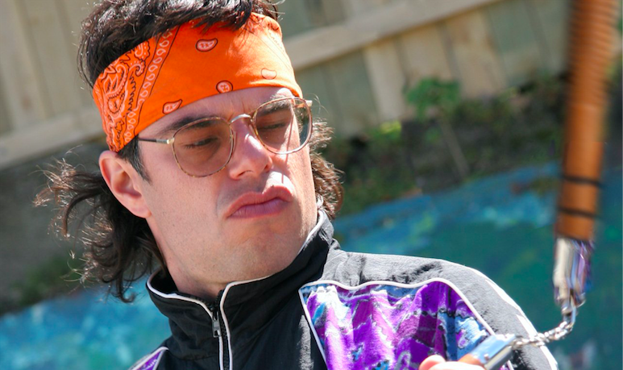
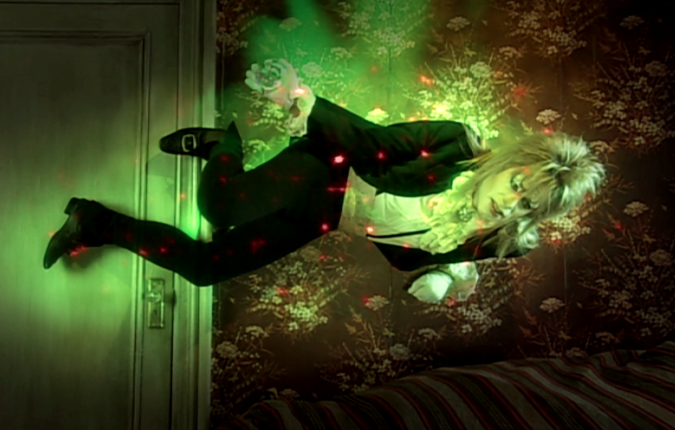

I've given up on pretending like this website chain isn't about this man
Did you know?
When Bret and Jemaine started Flight of the Conchords, they only knew three chords on the guitar; their first song consisted of two chords (Foux Du FaFa)
Jemaine had to be CUT OUT of his Boiwe costume (which he wore on episode 6 of Flight of the Conchords) because it was too tight
If you think Jemaine is super cool and awesome, then click here for the last page of facts! text